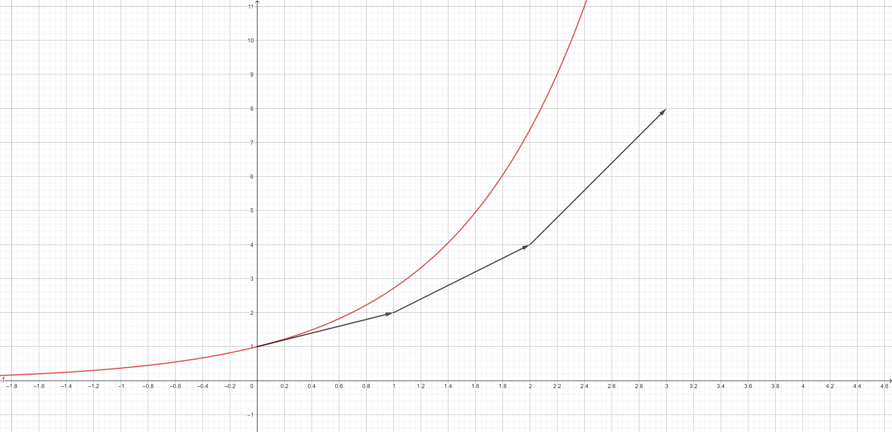

Stabile Planetenorbits bei Mehrfachsternensystemen
Inwiefern können Simulationen bei der Untersuchung dieses komplexen Sachverhaltes helfen?
Ein Vortrag von Valentin Stöcker
Gliederung
- Einführung
- Simulation
- Ansatz
- Euler-Verfahren
- Fehlerabschätzung
- Runge-Kutta-Verfahren
- Fazit
- Beantwortung der Themenfrage
- Forschungsergebnisse
- Quellen
Einführung
Einführung
- ca. 50% aller Sternensysteme sind mehrfach
- nicht analytisch lösbar
⇒ nur durch Beobachtung oder Simulation Erkenntnissgewinn
Simulation
Ansatz
Ansatz
- Objekt hat Position und Geschwindigkeit
- und
- aus , , und wird neues und nach Zeitschritt h berechnet
Euler-Verfahren
Euler-Verfahren
- analog für
Euler-Verfahren
Euler-Verfahren
Legende
- Euler mit h = 3h
- Euler mit h = 12h
Euler-Verfahren
- relativ ungenau
- nicht symmetrisch
- einfach zu programmieren und zu berechnen
- Konsistenzordnung von 1
Fehlerabschätzung
Fehlerabschätzung
- kann durch Energieerhaltungssatz oder Drehimpulserhaltung errechnet werden
Fehlerabschätzung
Legende
- Euler mit h = 3h
- Euler mit h = 12h
Runge-Kutta-Verfahren
Runge-Kutta-Verfahren
 |
 |
Runge-Kutta-Verfahren
 |
 |
Runge-Kutta-Verfahren
 |
Hilfssteigungen werden im Verhältnis 1 2 2 1 zur neuen Steigung kombiniert |
Runge-Kutta-Verfahren
Legende
- Runge-Kutta mit h = 12h
- Euler mit h = 12h
Runge-Kutta-Verfahren
Legende
- Runge-Kutta mit h = 2d
- Runge-Kutta mit h = 12h
Runge-Kutta-Verfahren
- sehr genau
- symmetrisch
- 4 mal langsamer als Euler
- Konsistenzordnung von 4
Fazit
Beantwortung der Themenfrage
Beantwortung der Themenfrage
- mind. 100 mal schneller möglich
⇒ höhere Genauigkeit und größeres Zeitintervall möglich⇒ da Runge-Kutta Konsistenzordnung von 4 hat, drastische Verbesserungen
- gewisses Maß an Sicherheit durch Fehlerabschätzung
- Stabilität von Orbits kann näherungsweise bestimmt werden
Forschungs- ergebnisse
Forschungsergebnisse
- 2 Arten von Orbits (Typ P und Typ S)
- 50-60% haben stabile habitable Zonen
Forschungsergebnisse
Quellen
Textquellen
- P. Bodenheimer, G. P. Laughlin, M. Rozyczka, H. W. Yorke: Numerical methods in astrophysics: an introduction, Taylor & Francis, 2007
- Eugene Butikov: Motions of celestial bodys: computer simulations, 2014
- Leon Lapidus, John H. Seinfeld: Numerical solution of ordinary differential equations, 1971
- John M. A. Danby, Richard Kouzes, Charles Whitney: Astrophysics simulations: the Consortium for Upper-Level Physics Software, 1995
- https://en.wikipedia.org/wiki/Euler_method
- https://en.wikipedia.org/wiki/Runge%E2%80%93Kutta_methods
- https://en.wikipedia.org/wiki/Habitability_of_binary_star_systems
- https://www.mathematik.tu-dortmund.de/lsviii/new/media/veranstaltungen/sose2013/numphy/kapitel3.pdf
{kind=link}